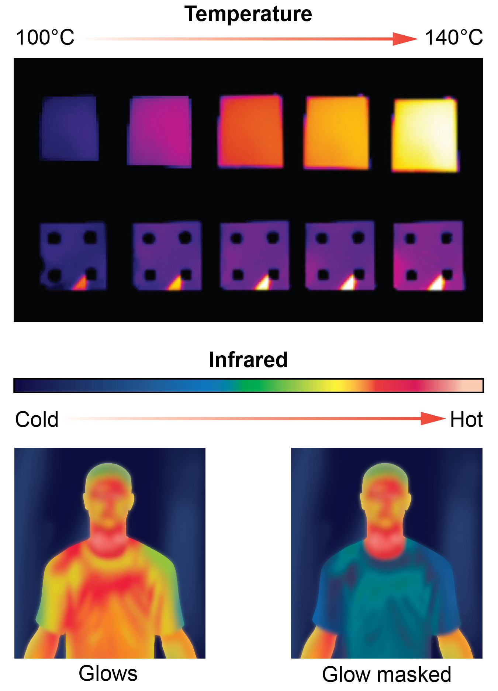
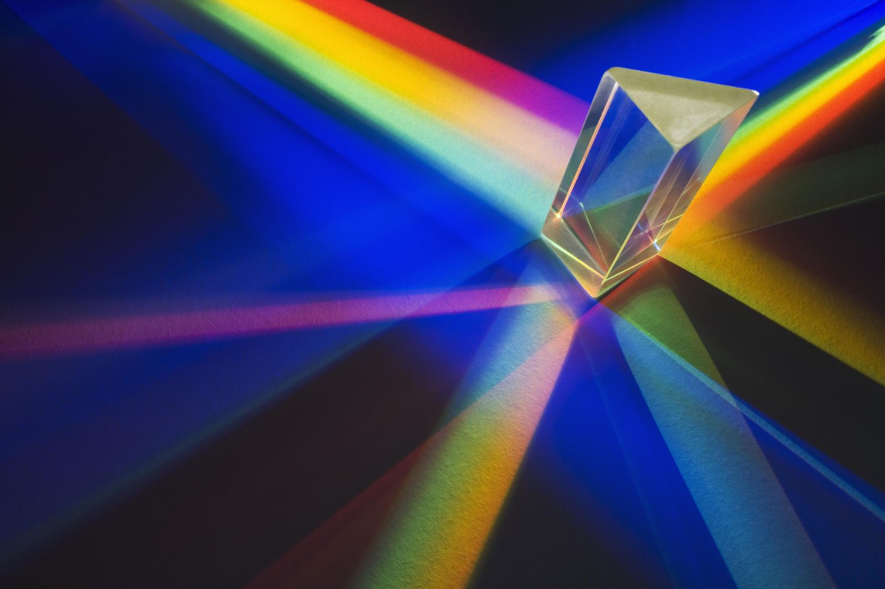
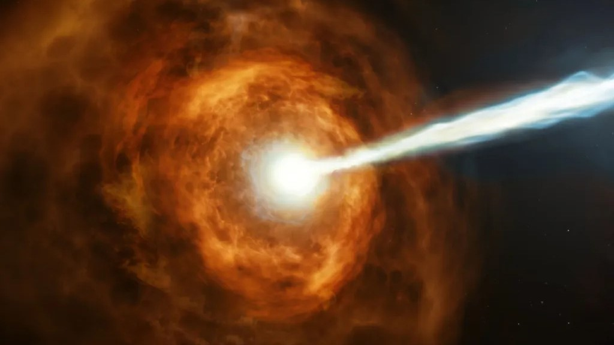

What is Electromagnetic Radiation?
Electromagnetic Radiation (EMR) is a form of energy that propagates through space at the speed of light. It consists of synchronized oscillations of electric and magnetic fields that are perpendicular to each other and to the direction of energy propagation.
Unlike mechanical waves (like sound), EMR does not require a physical medium to travel through and can seamlessly move across the vacuum of outer space.

Figure 1: Complete guide to the electromagnetic spectrum from long wavelengths (Radio) to short wavelengths (Gamma).
The Electromagnetic Spectrum
EMR is classified by wavelength and frequency into seven distinct regions. As wavelength decreases, frequency and energy levels dramatically increase.

Radio Waves
Used for broadcast radio, television communication signals, and mobile networks over long distances.
Microwaves
Essential for radar technology, Wi-Fi data transmissions, and heating food evenly inside microwave ovens.

Infrared (IR)
Felt primarily as radiant heat. Emitted by the sun, fires, and utilized in standard television remote controls.

Visible Light
The only narrow band of electromagnetic radiation that the human eye is biologically engineered to detect.

Ultraviolet (UV)
Radiation originating from the sun that causes sunburns. Widely used in medical sterilization processes.

X-Rays
Highly energetic waves able to penetrate soft body tissue to image internal bone structures and skeletal features.

Gamma Rays
Produced by nuclear reactions and cosmic events. Extensively applied in targeted cancer radiation therapies.
Wave-Particle Duality
In modern physics, EMR is understood through the principle of wave-particle duality. This means it exhibits properties of both continuous waves (such as refraction and interference) and discrete packets of energy called photons (exhibited during the photoelectric effect).